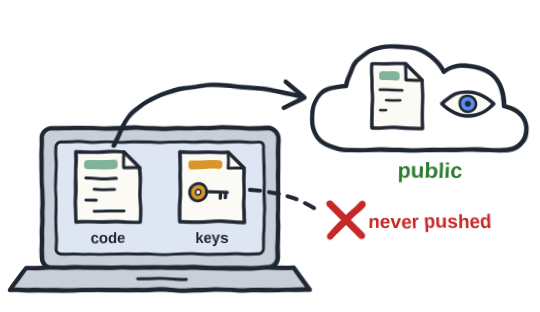
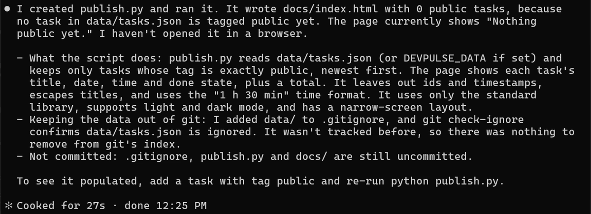
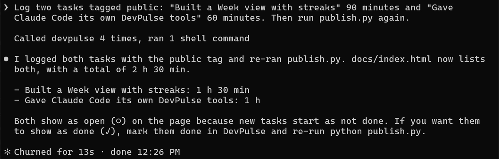
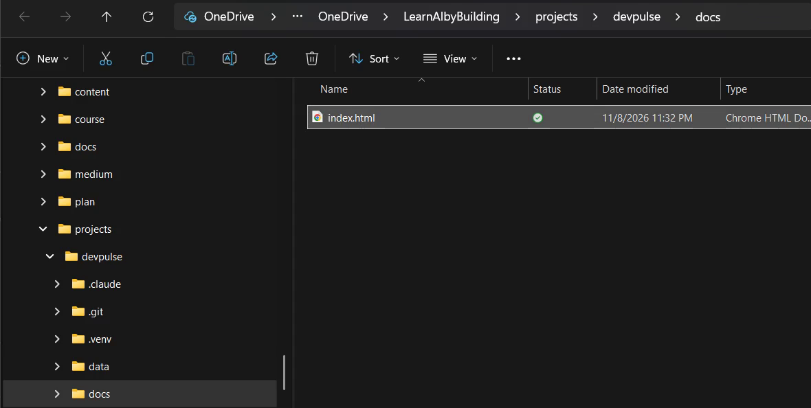
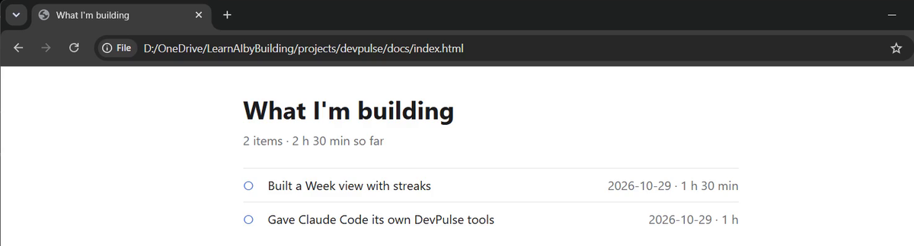
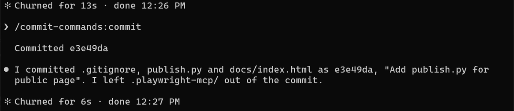
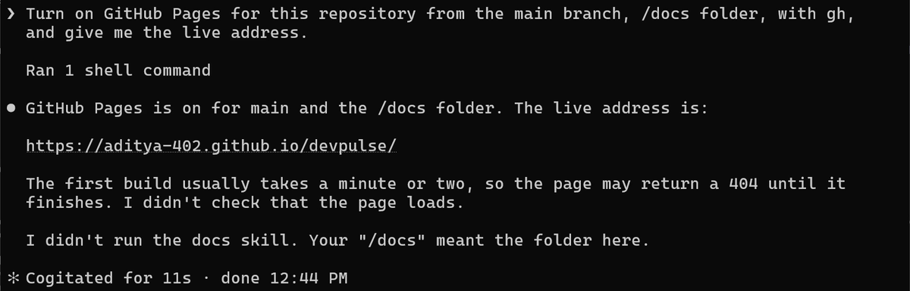
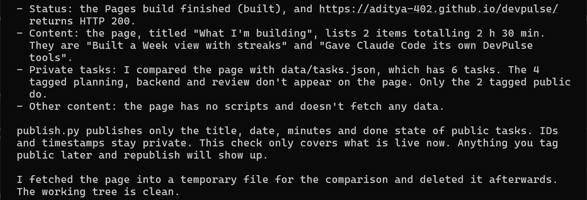
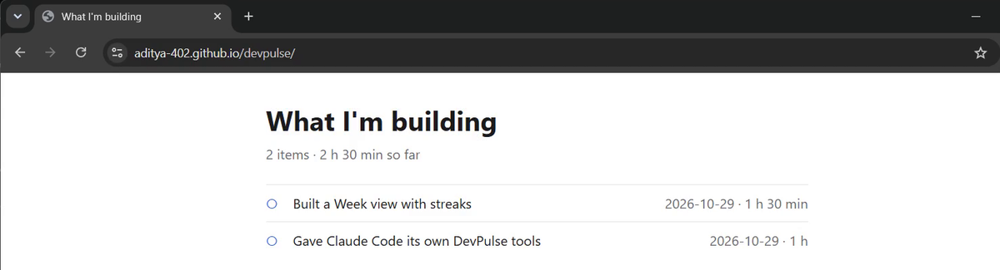

Prefer to watch? This chapter goes with Episode 14 (5:55). Open it on YouTube.
gh, GitHub's own command-line tool. To check, run gh --version in PowerShell or Terminal. If it is missing, install gh from its official site. Then sign in once with gh auth login. You do this yourself: Claude never types your password.A colleague wants to follow your progress
So far, everything you built in DevPulse lives only on your laptop. Now a colleague from another team wants to follow your progress on their project, without asking you every day. But DevPulse also holds your other tasks.
A link is better than a screenshot: your colleague opens it, and it stays up to date. But the page must show only the tasks you choose, and your tasks file must never leave the laptop.
Software teams handle this every day. Say you put a project on GitHub for anyone to read. Its code is public, but its API keys sit in a separate file that is never pushed. And before every push, you take one look at what is going out.

How do you give your colleague one link that shows just their tasks?
A page of public tasks only
The public part is one plain web page. A small script reads your tasks, keeps only the ones tagged public, and writes the page into a folder called docs. Your tasks file is like those API keys: it stays out of Git, so it is never uploaded. Only the page goes.

data/ is now in .gitignore, and Git confirms the tasks file is ignored.An empty page proves nothing. Give it two tasks to show. This uses your own DevPulse tools from chapter 11.

To see the page on your laptop, go to the docs folder inside your devpulse project and open index.html. Use File Explorer on Windows, or Finder on a Mac.

docs folder holds one file, index.html. Double-click it.
You can also open it from Claude Code.
Commit it with /commit-commands:commit.

Put the project on GitHub
Now the page has to leave the laptop. GitHub keeps a copy of your project online, called a repository, and it can serve one folder as a website, for free. Claude works with GitHub through gh, GitHub's own command-line tool.
You set gh up and sign in to your own GitHub account yourself, once, in your second tab. That way Claude never types your password.
gh auth login asks a few questions. Pick GitHub.com, then "Login with a web browser", and follow the code it shows. Then go back to Claude Code.
Before it created anything, Claude checked that data/ is ignored and nothing in it is tracked. Its next command created the repository and pushed. Then it counted the data/ files that reached GitHub: none. Yours will be under your own GitHub name.
"Public" means anyone can read every file in the repository. That is why data/ had to be in .gitignore first. Once a file is pushed, deleting it later does not remove it from Git's history.
Turn the docs folder into a website
GitHub Pages serves one folder of your repository as a website. We put the page in docs/ for exactly this.

Your address follows the same shape: your-github-name.github.io/devpulse. Wait a minute or two before you open it.
Check what went public
Give the first build a minute or two. Anything on the internet can be read by anyone. So before you share the link, ask Claude to prove two things: the page is up, and nothing private is on it.

Now type the live address into your browser.

That last check is the part to keep. You didn't stop at publishing the page: you asked for the check, and Claude showed you what went public, and what stayed private.
To add a task later: tag it public, run python publish.py (Mac: python3), commit, and push. GitHub rebuilds the page.
What it costs
GitHub Pages is free for public repositories. The cost is care: every push to a public repository is public. So run the check every time you push.
Every step so far happened in one terminal window. In the next chapter, Claude Code works on DevPulse from three other places: a code editor, a desktop window, and the browser. You may know them as VS Code, the desktop app, and Claude Code on the web.
Quick reference
The prompts from this chapter, ready to copy: every prompt, chapter 14.
| Command or key | What it does | Use it when |
|---|---|---|
Create publish.py that builds docs/index.html … | Writes a script that turns public tasks into one static page | You want to share some of your data, not all of it |
data/ in .gitignore | Keeps your private task file out of every commit | Before anything goes to GitHub |
gh auth login | Signs the GitHub CLI in to your own account | Once, before Claude creates a repository for you |
Create a public GitHub repository … with gh | Creates the repository and pushes your project | The project is ready to leave your laptop |
Turn on GitHub Pages … /docs folder | Serves docs/ as a website | You want a live address to share |
Check that the live page is up and shows no private tasks. | Fetches the live page and compares it with your data | Every time something goes public |
Make your page show finished work
The goal: the live page shows both tasks as done.
The steps: ask Claude to mark both public tasks done and run publish.py again. Commit and push. Wait a minute, then run the check prompt again.
Guess first: will the live page change the moment you push, or later?
One question for you: who would you send your link to, and which tasks would you leave out? Mine: my colleague gets one link, with these 2 tasks. The other 4 stay on my laptop.
References
Where each command and setting on this page comes from. The Claude Code screenshots are from our own recording on 29 Oct 2026, Claude Code 2.1.312; the folder and browser pictures are from 12 Nov 2026.
- GitHub · GitHub CLI manual gh auth login, gh repo create, and gh api for repository settings. https://cli.github.com/manual/
- GitHub · Configuring a publishing source for your GitHub Pages site Publishing from the main branch and the /docs folder; the first build can take a few minutes. https://docs.github.com/en/pages/getting-started-with-github-pages/configuring-a-publishing-source-for-your-github-pages-site
- Git · gitignore How a .gitignore line keeps a folder out of every commit. https://git-scm.com/docs/gitignore
- My own recording · 29 Oct 2026, Windows 11 The repository, Pages and the live check took under five minutes; the page showed 2 public tasks and none of the 4 private ones.
New chapters and episodes come out every week. Follow along on YouTube or the WhatsApp channel. Questions? Ask under the video on YouTube; I read every comment.